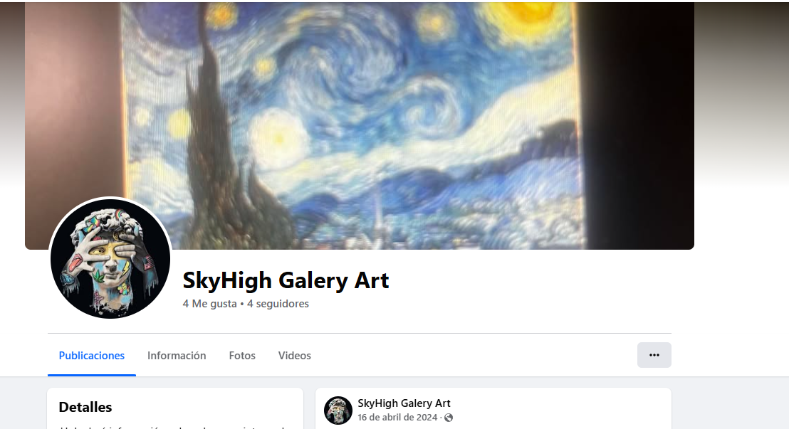
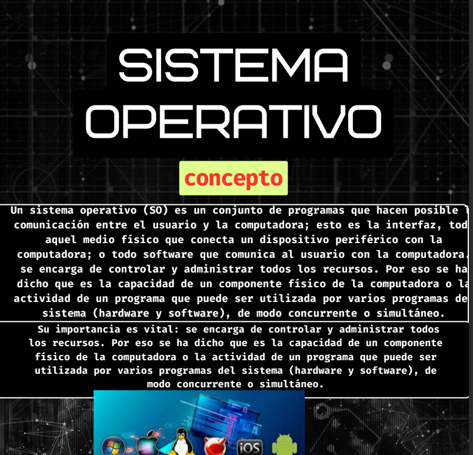

Explora cada módulo de formación haciendo clic en los enlaces.
| módulo 2 | Descripción | Imagen |
|---|---|---|
| Sub modulo 1 :Comunidades Virtuales | Aqui se aprendio a ¿Que es una comunidad virutal ? y tocando temas como podcast, yootube, paginas de facebook al final con el objetivo de hacer nuestra propia comunidad haciendo lo ya mencionado como videos fotos publicaciones etc. |  |
| Sub Modulo 2 : Mantenimiento y Redes de computo | Aqui aprenderemos a Que es y como manejar el mantenimiento de una computadora como por ejemplo limpiando la pc por dentro quitando componentes en general y usando las herramientas adecuadas ademas de construir una red en packet tricer donde puedes crear una red virtual con distintos dispositivos |  |